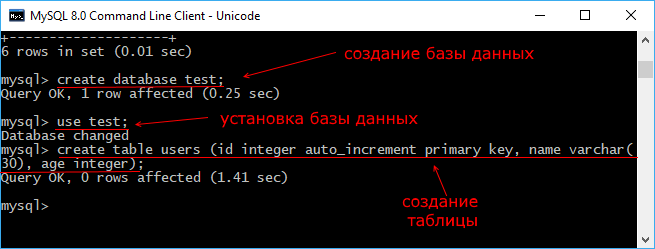

Консольный клиент MySQL Command Line Client
При установке сервера MySQL также устанавливается консольный клиент для работы с базами данных. Например, в Windows в меню Пуск можно найти программу MySQL 8.0 Command Line Client. Это и есть собственно консольный клиент:
Причем клиент устанавливается сразу в двух вариантах - с поддержкой Unicode и без.
Запустим MySQL 8.0 Command Line Client - Unicode. Вначале нам отобразится предложение ввести пароль:
Здесь необходимо ввести пароль, который был установлен при установке MySQL для пользователя root. И после удачного подключения можно будет отправлять серверу команды через данный консольный клиент.
Для начала посмотрим, какие базы данные есть на сервере по умолчанию. Для этого введем команду show databases;
После выполнения этой команды мы увидим, что на сервере по умолчанию уже есть ряд баз данных, которые выполняют административные функции.
Теперь создадим базу данных с помощью следующей команды языка SQL:
create database test;
Для создания базы данных применяется команда create database, после которой указывается название бд. То есть в данном случае база данных будет называться "test".
Чтобы обращаться к какой-нибудь определенной базе данных, вначале надо установить нужную базу данных в качестве текущей. Для этого нужно выполнить команду use, после которой указывается название базы данных. Например, для подключения ранее созданной базы данных test введем следующую команду:
use test;
Затем создадим в этой базе данных таблицу с помощью команды:
create table users (id integer auto_increment primary key, name varchar(30), age integer);
Данная команда создает таблицу users, в которой будет три столбца - id, name и age. id будет хранить уникальный числовой идентификатор пользователя и будет автоматически генерироваться базой данных, name будет хранить имя пользователя, а age - его возраст.
После этого мы можем добавлять и получать данные из выше созданной таблицы. Вначале добавим в таблицу одну строку с помощью следующей команды:
insert into users (name, age) values ('Tom', 34);
И в конце получим добавленные данные:
select * from users;
Таким образом в общих чертах мы можем работать с консольным клиентом MySQL Command Line Client.